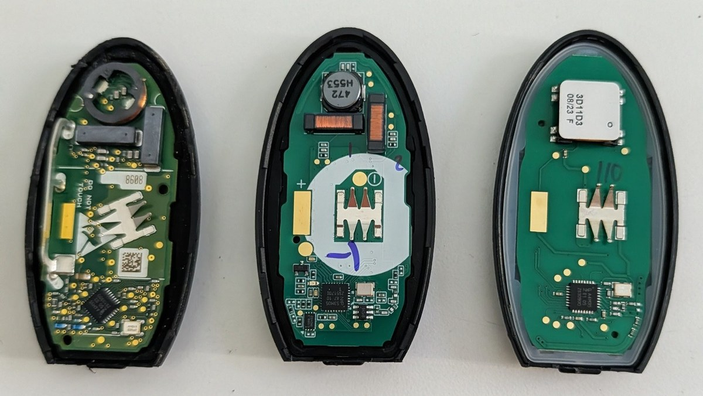

Can You Program Your Own Car Key? The Truth About Cheap Amazon & eBay Keys

Three Nissan / Infiniti smart key fobs, opened up — OEM (left), a quality aftermarket board (middle), and a cheap online fob (right). Same shape on the outside; very different electronics inside.
Short answer: for most vehicles on the road today, no — you can't reliably program your own key from a cheap Amazon or eBay fob, and trying usually costs you more than it saves. A key bought online still has to be cut to your car and programmed to its security system with professional equipment — and the bargain keys are often the wrong part, used and locked to another car, or outright counterfeit. Here's the honest breakdown of when DIY actually works, when it doesn't, and why the "deal" usually isn't one.
Not sure what your car needs? Call (405) 870-5397 — we'll tell you straight.
Call Now — (405) 870-5397Every working key needs two things — and the online key gives you neither
To start your car, a key has to be both:
- Cut to your vehicle's exact mechanical code (or, for smart keys, physically matched to your vehicle), and
- Programmed to your car's immobilizer so the security system recognizes it.
A fob that shows up in an Amazon box is neither of those for your specific car. Even a flawless blank won't turn your ignition until it's cut, and it won't start the engine until it's cut and programmed to your vehicle. That's the part the listing doesn't mention.
Why the cheap Amazon and eBay keys so often fail
Look at the three fobs in the photo above — all three fit a Nissan or Infiniti, everyday car to luxury SUV. Same shape on the outside, but open them up and the difference is obvious. That's the whole problem in one picture. We get calls every week from people holding a key that won't work. Usually it's one of these:
- Wrong part. The FCC ID, frequency, or part number doesn't match your exact year, make, and model. "Fits Ford F-150" covers a dozen different keys — and only one is yours.
- Used and already locked. A lot of "cheap" fobs are pre-owned and still paired to another car's VIN. Many can't be reset to a new vehicle, no matter what the listing claims.
- Counterfeit chips. Low-grade or fake transponder chips may not hold programming — and can throw your car's security system into a fit.
- Cheap electronics. Aftermarket shells with bargain boards mean short battery life, dropped buttons, and weak range.
- No warranty, no recourse. When it doesn't work, you're out the money and the time, with a seller who's long gone.
To be fair: a plain fob case or cover, or a fresh battery, is perfectly fine to buy online. Those aren't the electronics that talk to your car. It's the key itself that's the trap.
"But I saw a video where someone programmed their own key"
You did — and for a narrow set of cars, it's real. Some older vehicles have onboard programming: if you already have two working keys, you can sometimes add a spare yourself by following the owner's manual. If that's your car and your situation, go for it — that's the one case where DIY makes sense.
It falls apart the moment any of these is true, which covers most cars made in the last several years:
- You've lost all your keys (no working key to program from).
- It's a smart / push-to-start key.
- Your vehicle uses a secure gateway that requires authenticated, professional access to even talk to it.
For those, no YouTube video and no eBay fob gets you there.
The hidden cost of the "$30 key"
Here's how the bargain usually plays out. You buy the cheap key. It arrives. It still has to be cut — so you're calling a locksmith or dealer anyway. Maybe you try to program it yourself first, and a botched attempt puts the car into anti-theft lockout, burns a programming slot, or bricks the cheap key entirely. Now you're paying for the online key and the pro to fix it — more than if you'd just called a pro first. The math almost never works. (For what a proper key actually runs, here's our honest car key cost breakdown.)
Already bought one and want to try anyway? That's fine — bring it and we'll program it for you. Just know our fee covers our time and equipment whether the key works or not, because we can't guarantee a part we didn't supply. If it's the wrong part or a bad chip, you'll have paid for the online key and our time and still need a key from us. No hard feelings if you'd rather roll the dice — we just want you to know the odds before you do.
What you can safely do yourself
We're not here to tell you to never touch your keys. These are genuinely fine to DIY:
- Replace the fob battery.
- Buy a protective case or cover.
- On some older vehicles, program a spare when you already have two working keys (check your manual).
Everything else — all-keys-lost, smart keys, and just about any newer vehicle — is a pro job, and there's no shortcut around it.
Why a real key is worth it
When we make your key, it's the right part, cut to your code, programmed correctly, and tested before we leave — and it's backed by our 6-month key warranty. That Amazon key carries no warranty at all. We come to you across the OKC metro, and you'll know the price up front.
Skip the guesswork. Call (405) 870-5397 for a key that actually works.
Call Now — (405) 870-5397Frequently Asked Questions
Can I program my own car key?
On some older vehicles, yes — if you already have two working keys, you can sometimes add a spare through onboard programming in the owner's manual. But if you've lost all your keys, or you have a smart/push-to-start key or a newer vehicle, it takes professional equipment and secure access that DIY can't replicate.
Why won't my Amazon or eBay key fob work?
Usually because it's the wrong part for your exact vehicle, it's a used fob already locked to another car, or it's a counterfeit chip — and even the right blank still has to be cut and programmed to your car. The listing rarely tells you that.
Is it cheaper to buy a car key online?
Almost never, once you add it up. You still have to pay to get it cut and programmed, and a failed DIY attempt can cost even more to undo. Most people end up paying for the cheap key and a locksmith.
Can you program a key I already bought online?
Yes — if you've already bought one, bring it and we'll attempt to program it. One thing to know up front: our programming fee covers our time and equipment whether the key works or not, because we can't guarantee a part we didn't supply. Cheap online keys are hit or miss — some program fine, some are the wrong part or a bad chip and simply won't. So there's a real chance you pay for the online key and our programming and still end up needing a key we supply. If you'd rather skip that gamble, we'll bring the right key from the start, cut it, program it, test it, and back it with our warranty. Either way, call with your year, make, and model and we'll tell you honestly what to expect.
What can I safely do myself?
Replace the fob battery, add a case or cover, and on some older cars program a spare if you already have two working keys. Beyond that, it's a professional job.